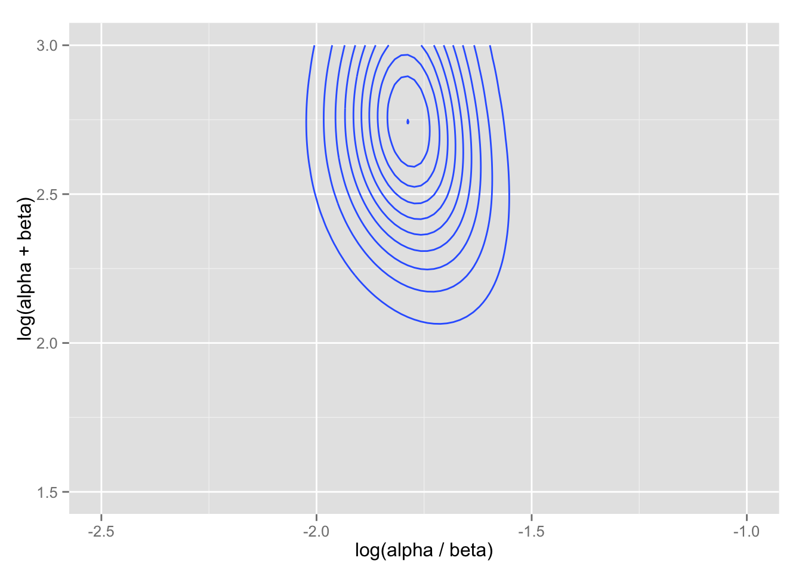

library("ggplot2")
library("plyr")解析の部分 (pp.108-111) については教科書とスライドを参照せよ。以下の数式番号はBDA3 のものである。
使用するデータを読み込む。
rats <- scan("rats.txt", skip = 4)
rats <- matrix(rats, ncol = 2, byrow = TRUE)
y <- rats[,1]
n <- rats[,2]
J <- length(y)超母数 \((\alpha, \beta)\) の周辺事後分布 \(p(\alpha, \beta | y)\) を計算する式は (5.8)。
まず、(5.9) を超事前分布とし、それを (5.8) に代入し、かつその自然対数を計算する。 その際、母数を \((\alpha, \beta)\) から \((\log(\alpha / \beta), \log(\alpha + \beta))\) に変換するために、ヤコビアン \(|J| = \alpha\beta\) を掛ける。
グリッドは \(\log(\alpha / \beta)\) と \(\log(\alpha, \beta)\) でとりたいので、 引数も \((\phi_1, \phi_2) = (\log(\alpha / \beta), \log(\alpha + \beta))\) にする。 \[\alpha = \frac{\exp(\log(\alpha / \beta)) \exp(\log(\alpha + \beta))}{1 + \exp(\log(\alpha/\beta))}\] \[\beta = \frac{\exp(\log(\alpha + \beta))}{1 + \exp(\log(\alpha/\beta))}\]
これを求めるための関数は、次のように定義できる。
get_alpha <- function(phi1, phi2) {
return( exp(phi1 + phi2) / (1 + exp(phi1)) )
}
get_beta <- function(phi1, phi2) {
return( beta <- exp(phi2) / (1 + exp(phi1)) )
}
m_post_hyper <- function(phi1, phi2, y, n) {
## Given phi1 = log(alpha / beta), phi2 = log(alpha + beta),
## y (j-dimensional vector), and n (j-dim. vec),
## return the log of marginal posterior density (unnormalized)
## of (alpha, beta)
alpha <- get_alpha(phi1, phi2)
beta <- get_beta(phi1, phi2)
x <- ( gamma(alpha + beta) / ( gamma(alpha) * gamma(beta) ) ) *
( gamma(alpha + y) * gamma(beta + n - y ) /
gamma(alpha + beta + n) )
x <- log(x)
return( (-5/2) * log(alpha + beta) +
log(alpha) + log(beta) + sum(x))
}グリッドを用意する。 とりあえず、\((\log(\alpha / \beta), \log(\alpha + \beta)) \in [-2.5, -1], \times [1.5, 3]\) とする。
phi1 <- seq(-2.5, -1, length = 100)
phi2 <- seq(1.5, 3, length = 100)
Grid.1 <- expand.grid(phi1, phi2)
names(Grid.1) <- c("phi1", "phi2")グリッド上の各点について、周辺事後分布（正規化前）を計算する。
Grid.1$dens <- rep(NA, dim(Grid.1)[1])
for (i in 1:dim(Grid.1)[1]) {
phi1 <- Grid.1[i, 1]
phi2 <- Grid.1[i, 2]
Grid.1$dens[i] <- m_post_hyper(phi1, phi2, y = y, n = n)
}
Grid.1$dens <- with(Grid.1, exp(dens - max(dens)))等高線図を描いてみる。
cont.1 <- ggplot(Grid.1, aes(phi1, phi2, z = dens)) +
geom_contour() + xlim(-2.5, -1) + ylim(1.5, 3)
cont.1 + labs(x = "log(alpha / beta)", y = "log(alpha + beta)")
分布の中心（中央値付近）は、階層モデルを使わなかった場合の（データ全体の平均とサンプルサイズによって設定した）値とほぼ一致する。 しかし、このグリッドの範囲では、分布の一部をカバーし損なってしまうことがわかる。 そこで、グリッドの範囲を変えてみる。
phi1 <- seq(-2.2, -1.4, length = 100)
phi2 <- seq(1.5, 4.5, length = 100)
Grid.2 <- expand.grid(phi1, phi2)
names(Grid.2) <- c("phi1", "phi2")このグリッドの各点で、正規化前の周辺事後分布を計算する。
Grid.2$dens <- rep(NA, dim(Grid.2)[1])
for (i in 1:dim(Grid.2)[1]) {
phi1 <- Grid.2[i, 1]
phi2 <- Grid.2[i, 2]
Grid.2$dens[i] <- m_post_hyper(phi1, phi2, y = y, n = n)
}
Grid.2$dens <- with(Grid.2, exp(dens - max(dens)))これを等高線図にしてみよう。
cont.2 <- ggplot(Grid.2, aes(phi1, phi2, z = dens)) +
geom_contour() + xlim(-2.2, -1.4) + ylim(1, 5) +
coord_fixed(ratio = .2)
cont.2 + labs(x = "log(alpha / beta)", y = "log(alpha + beta)")今度は、分布全体を捉えているようである。
この分布から、\((log(\alpha/\beta), log(\alpha + \beta))\) を1000個引いてみよう。
phi1.post <- ddply(Grid.2, .(phi1), summarize, dens = sum(dens))
phi2.post <- ddply(Grid.2, .(phi2), summarize, dens = sum(dens))
phi1.sample <- sample(phi1.post$phi1, size = 1000,
prob = phi1.post$dens, replace = TRUE)
phi1.sample <- phi1.sample + runif(1000, -0.8/100, 0.8/100)
phi2.sample <- sample(phi2.post$phi2, size = 1000,
prob = phi2.post$dens, replace = TRUE)
phi2.sample <- phi2.sample + runif(1000, -4/100, 4/100)
df <- data.frame(phi1 = phi1.sample, phi2 = phi2.sample)抽出したペアを散布図にしてみよう。
pt <- ggplot(df, aes(phi1, phi2)) + geom_point() +
xlim(-2.2, -1.4) + ylim(1, 5) + coord_fixed(ratio = .2)
pt + labs(x = "log(alpha / beta)", y = "log(alpha + beta)")ここで、\(\alpha\) と \(\beta\) の事後分布の期待値、\(\mathrm{E}(\alpha | y)\) と \(\mathrm{E}(\beta | y)\) をそれぞれ計算してみよう。
Grid.2$alpha <- get_alpha(Grid.2$phi1, Grid.2$phi2)
Grid.2$beta <- get_beta(Grid.2$phi1, Grid.2$phi2)
Grid.2$prob <- with(Grid.2, dens / sum(dens))
## E(alpha | y)
(exp.alpha.post <- with(Grid.2, sum(alpha * prob)))## [1] 2.402281## E(beta | y)
(exp.beta.post <- with(Grid.2, sum(beta * prob)))## [1] 14.31831最後に、\(\theta_j\) を抽出しよう。まず、超母数を抽出し、その値を利用して \(\theta_j\) をベータ分布から抽出する。ここでは、1,000個値を引くこととする。
まず、\((\alpha, \beta | y)\) を1000組引く。
Grid.2$index <- 1:dim(Grid.2)[1]
target <- with(Grid.2, sample(index, size = 1000,
prob = prob, rep = TRUE))
## 1000 draws of alpha and beta
alpha1000 <- Grid.2$alpha[target]
beta1000 <- Grid.2$beta[target]次に、抽出した \(\alpha, \beta\) を使い、 \[\theta_j | \alpha, \beta, y \sim \mathrm{Beta}(\alpha + y_j, \beta + n_j - y_j\] によって、\(\theta\) を抽出する。
post.matrix <- matrix(NA, ncol = 71, nrow = 1000)
for (j in 1:J) {
post.matrix[, j] <- rbeta(1000, alpha1000 + y[j],
beta1000 + n[j] - y[j])
}この推定結果を図示しよう。
rate <- y /n
post.median <- apply(post.matrix, 2, median)
post.lower <- apply(post.matrix, 2, function(x) quantile(x, .025))
post.upper <- apply(post.matrix, 2, function(x) quantile(x, .975))
Post <- data.frame(rate = rate,
med = post.median,
lower = post.lower,
upper = post.upper)
mean.overall <- mean(Post$rate)
shrink <- ggplot(Post, aes(x = rate, y = med)) +
geom_linerange(aes(ymin = lower, ymax = upper), color = "skyblue") +
geom_point() +
xlim(0, max(Post$upper)) + ylim(0, max(Post$upper)) + coord_fixed() +
geom_abline(intercept = 0, slope = 1, color = "gray") +
geom_hline(yintercept = mean.overall, color = "red", linetype = "dashed")
shrink + labs(x = "observed rate, y[j] / n[j]",
y = "95% posterior interval for theta[j]")この図の点は\(\theta_j\) の点推定値（事後分布の中央値）、線分は95%事後分布区間を示す。 また、赤い点線はデータ全体の平均値である。
この図から何がわかる？